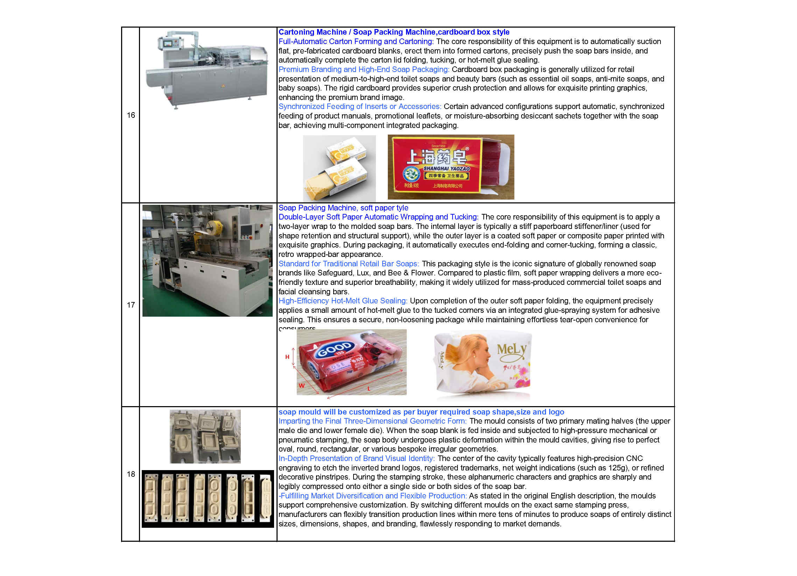
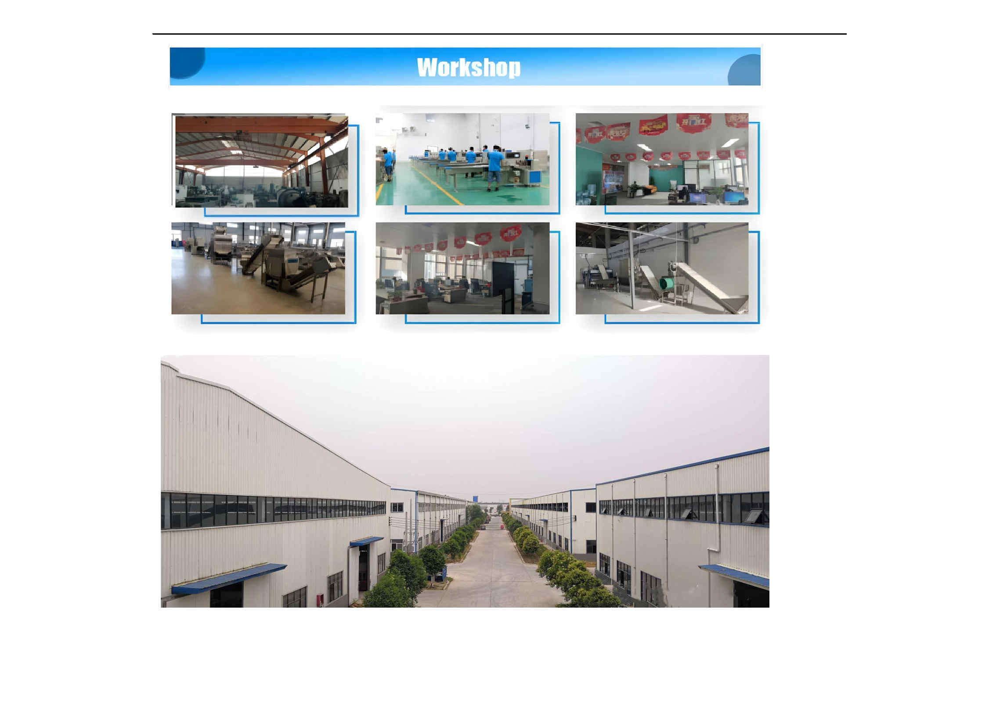
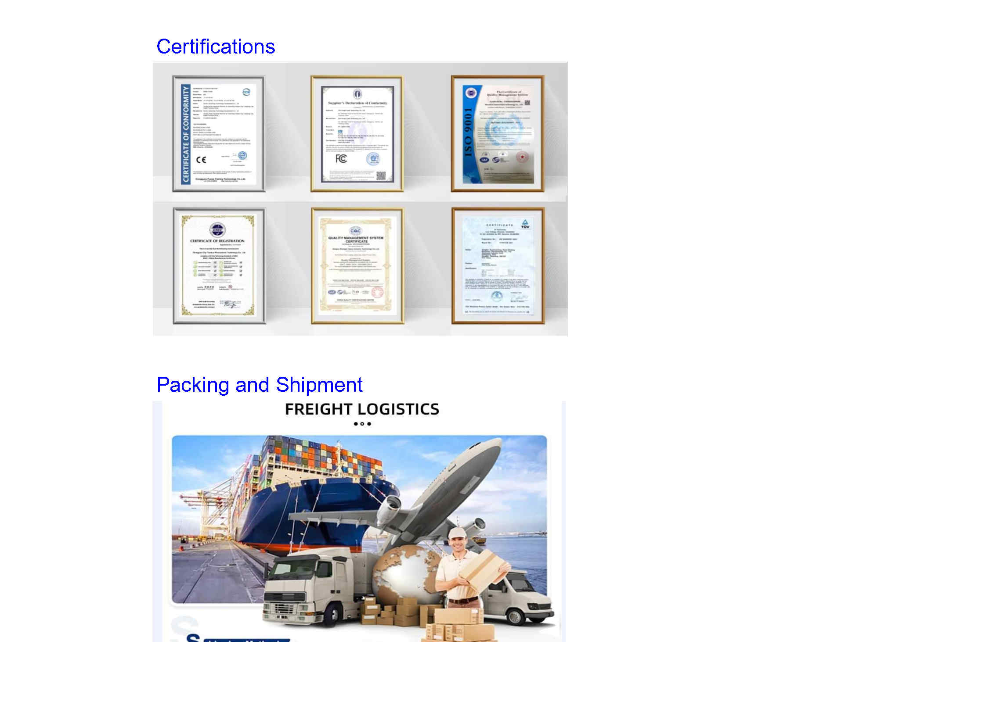
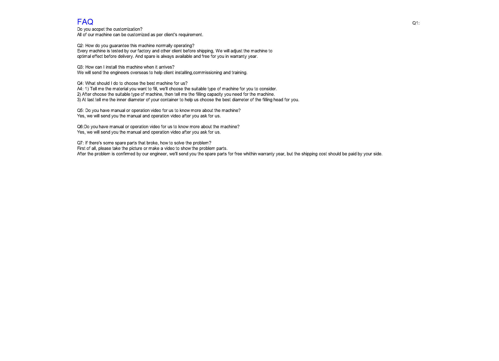

Reliable Industrial Soap Machinery Manufacturer
Established in 2005, Kaifeng Jasun Industry Co., Ltd. specializes in professional soap making machinery and complete production lines. With over two decades of industrial expertise, we are dedicated to providing global soap manufacturers with high-performance soap processing machineries from saponification to finished soap package. Our machines have exported to over 50 countries and district, including the developed countries like United States.







Contact Us for a Free Quote & Catalog
Get in touch with our engineering team directly via WhatsApp or Email for prices and specifications.
💬 Chat on WhatsApp ✉ Email: jasunmachinery@gmail.com